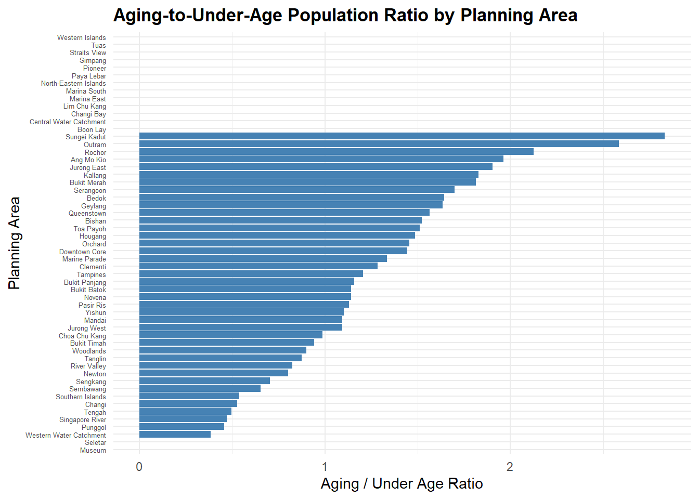

Take-home Exercise 1 (Phase 2)
1. Background
Objective of this exercise:
Review a classmate’s Take-home Exercise 1 in which I chose to review Yuan Yihao’s work
Critique the good design principles used in their visualization
Create makeover version of chosen visualization
2. Good Design Principles Used in Visualization
There are 3 visualization are created as the following:
Population by Age and Sex
Population by Age Group and Planning Area (Analyze the Aging Population in Each Region)
Aging-to-Under-Age Population Ratio by Planning Area

Design principles implemented:
Each graph has good color schemes, the colors between genders contrast each other that it’s easy to distinguish between genders
The usage of muted color in the Population by Age and Sex chart is helpful to highlight distribution of sex within the population
The graph is clearly labeled in the x-axis, y-axis, title and legend - good explanation (legends) to help reader understand the context of the graph
Population by Age Group and Planning Area has uses ordering visualization principle to highlight the planning area that has the highest aging population to lowest.
3. Makeover Version of Chosen Visualization
3.1 Import Libraries for Makeover
pacman::p_load(ggiraph, plotly,
patchwork, DT, tidyverse) 3.2 Makeover Version of Population by Population by Age and Sex
The graph is supposed to compare the number of population between genders and age (e.g. the number female is greater than male at the age 50, then the number of female population will be subtracted by the male population and a bar chart will be plotted). However, if we look at the graph at a glance, it might look like a distribution of the population between genders based on age chart instead.
My approach to the makeover:
Change the chart type from bar chart to stacked bar chart. Though we could easily understand the which gender population is much more prominent in each age, but it isn’t straight-forward. Since we want to compare the number of population between gender and age and which gender is more dominant in each age, stacked bar chart might be a better approach to compare between gender.
Change the y-axis from count of population to percentage since the focus of the graph is to compare and show difference between genders. Additionally, percentage makes the difference much more visible and easier to compare than raw values.
Use similar idea of “fading content that is not relevant” by fading the gender that has lower percentage.
grouped_data <- res_data %>% # group population based on age and sex
group_by(Age, Sex) %>%
summarise(Pop = sum(Pop, na.rm = TRUE), .groups = "drop") %>%
group_by(Age) %>%
mutate(Percent = Pop / sum(Pop) * 100, # convert count into percentage
is_dominant = Pop == max(Pop)) # flags if gender has higher numberggplot(grouped_data, aes(x = Age, y = Percent, fill = Sex, alpha = is_dominant, # transparency for gender that has lower percentage
width=0.6)) +
geom_col(position = "stack") + # visualize stacked bar chart
scale_alpha_manual(values = c("TRUE" = 1, "FALSE" = 0.4), guide = "none") + labs(
title = "Age-Sex Population Structure (in Percentage)",
x = "Age",
y = "Percentage (%)"
) +
theme_minimal()
Inisght
- The population have roughly similar number of male and female population from age 0 - 27. However, the male population is still slightly higher in number than female.
- Age 28 above, the population is dominated by female. The trend seems go higher as the age increases.
3.3 Makeover Version of Population by Age Group and Planning Area (Analyze the Aging Population in Each Region)
This graph compares the number of population by its age group from each planning area. The age group is separated into 3: Under age (aged 0 - 20), Adult (aged 21 - 60) and Aging (aged 61 above). The main objective of the graph is to analyze the number of aging population in each region.
My approach to the makeover:
Similar like the previous visualization, I would change the chart type from bar chart to stacked bar chart. Since we want to compare values from different groups (aging, adult and under age), it is easier to see compare the difference between groups with stacked bar chart.
Change the x-axis from count of population to percentage. Though we could see from the some planning area have high number of aging population, but it’s difficult to see the name of the planning area due to it being zoomed out to accommodate the range of the number of population in the x-axis.
res_data_grouped <- res_data %>% # group population into age groups
mutate(AgeGroup = case_when(
Age >= 0 & Age <= 20 ~ "Under Age",
Age >= 21 & Age <= 60 ~ "Adult",
Age >= 61 ~ "Aging"
)) %>%
group_by(PA, AgeGroup) %>%
summarise(Pop = sum(Pop, na.rm = TRUE), .groups = "drop") %>%
group_by(PA) %>%
mutate(Percentage = Pop / sum(Pop) * 100) # convert frequency into percentage aging_order <- res_data_grouped %>% # reorder PA by the highest aging population
filter(AgeGroup == "Aging") %>%
arrange(desc(Percentage)) %>%
pull(PA)
res_data_grouped$PA <- factor(res_data_grouped$PA, levels = aging_order) # convert PA into an ordered factor# plot stacked bar chart
ggplot(res_data_grouped, aes(x = PA, y = Percentage, fill = AgeGroup)) +
geom_col(position = "stack") +
labs(
title = "Age Group Distribution by Planning Area (in Percentage)",
x = "Planning Area",
y = "Percentage (%)"
) +
scale_fill_manual(values = c("Under Age" = "#e3dfde", "Adult" = "#ccc6c4", "Aging" = "#DB4437")) +
theme_minimal() +
theme(axis.text.x = element_text(angle = 45, hjust = 1))
Insight
- The planning area with highest aging population are: Outram, Ang Mo Kio, Jurong East, Bukit Merah and Rochor
- Interestingly, there are planning area where there are no aging groups (i.e. Museum and Seletar)
- There are also some planning area that no Singapore residents live in: Boon Lay, Central Water Catchment, Chnagi Bay, etc.
- Overall, roughly about 50% of the population in each planning area are made up of adults or working people.